Возможности
О том как менять настройки читайте в разделе "Настройка"
Автопоход с вокзала RIP
В случае если опция включена, оказавшись на вокзале вы автоматически выйдете в поход
Кнопка поход
В случае если опция включена, на локациях рядом с конвертом появится специальная кнопка для быстрого выхода в поход
А так же кнопка для быстрого открытия карты
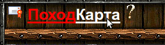
Ссылки с колец (муж\жена)
В случае если опция включена, по нажатии на обручальное кольцо в инфе персонажа
,откроется информация об этом персонаже
(в оригинале открывается список наград)
Ссылки с подарков в инфе
В случае если опция включена, по нажатии на подарок в инфе персонажа
,откроется информация о подарившем персонаже
(в оригинале ничего не происходит)
Ссылки в логах, соратниках
В случае если опция включена, в бою можно открыть информацию о соратниках, кликнув на ник в списке "Соратники"
Так же можно открыть информацию о персонаже из лога боя
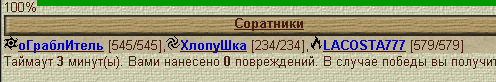
Счетчик ударов
В случае если опция включена, в бою будет указано сколько ваших ударов "висит" на соперниках
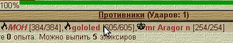
Либо красным шрифтом будет указано, что вы никого не ударили
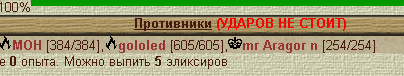
Живые таймеры
В случае если опция включена, время до штурма, начала боя, отбива будет отображатся в реальном времени
Суммарные жизни команд
В случае если опция включена, то в бою рядом с надписями "Соратники" и "Противники"
будет показано суммарное количество жизней данной команды
Помимо этого рядом с надписью "Соратники" будет указана разница в жизнях относительно противников
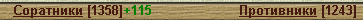
Уменшенные аватары в бою
В случае если опция включена, то аватары в бою будут составлять 2/3 от своего оригинального размер
Это может быть полезно тем у кого широкоформатный монитор (чтобы сразу видеть статы противника)
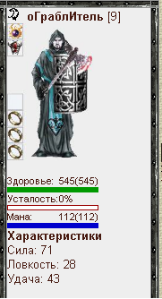
Список чата
В случае если опция включена, то будет модифицирован список людей в чате
Кнопки "Обновить" и "Поиск" заменены на иконки
Так же убрано меню со списком комнат. Вынесено в виде ссылок по первым буквам
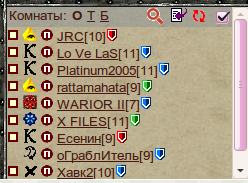
Состояние вещей
В случае если опция включена, состояние вещей будет показано полосками
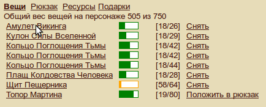
Статы полосками
В случае если опция включена, статы будут отображатся в виде полосок
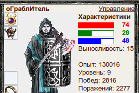
Кубик
В случае если опция включена, в бою появится кнопка для выставления случайного удара
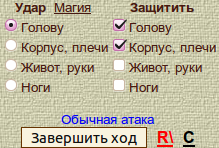
Имя персонажа в заголовке
В случае если опция включена, в заголовке окна вместо "Смутные Времена" будет отображено имя персонажа
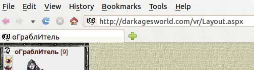